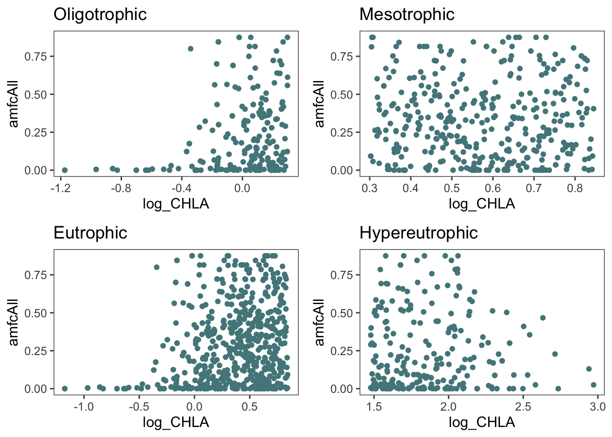

Chapter 6 Distribution of Means for different Landcover Types
ggplot(lu_07, aes(x = Landcover, y = amfcAll))+
geom_boxplot()+
theme(axis.text.x = element_text(angle = 90, hjust = 1))+
labs(x = "Dominant Landcover in Basin", y = "Fractional Littoral Macrophyte Coverage", title = "Fractional Littoral Macrophyte Coverage by Dominant Landcover")ggplot(dominant_07, aes(x = Landcover, y = amfcAll))+
geom_boxplot()+
theme_few()+
labs(x = "Dominant Landcover in Basin", y = "Fractional Littoral Macrophyte Coverage", title = "Fractional Littoral Macrophyte Coverage by Dominant Landcover")ggplot(oligo, aes(x = Landcover, y = amfcAll))+
geom_boxplot()+
theme(axis.text.x = element_text(angle = 90, hjust = 1))+
labs(x = "Dominant Landcover in Basin", y = "Fractional Littoral Macrophyte Coverage", title = "Fractional Littoral Macrophyte Coverage by Dominant Landcover - Oligotrophic")
ggplot(meso, aes(x = Landcover, y = amfcAll))+
geom_boxplot()+
theme(axis.text.x = element_text(angle = 90, hjust = 1))+
labs(x = "Dominant Landcover in Basin", y = "Fractional Littoral Macrophyte Coverage", title = "Fractional Littoral Macrophyte Coverage by Dominant Landcover - Mesotrophic")ggplot(eu, aes(x = Landcover, y = amfcAll))+
geom_boxplot()+
theme(axis.text.x = element_text(angle = 90, hjust = 1))+
labs(x = "Dominant Landcover in Basin", y = "Fractional Littoral Macrophyte Coverage", title = "Fractional Littoral Macrophyte Coverage by Dominant Landcover - Eutrophic")ggplot(heu, aes(x = Landcover, y = amfcAll))+
geom_boxplot()+
theme(axis.text.x = element_text(angle = 90, hjust = 1))+
labs(x = "Dominant Landcover in Basin", y = "Fractional Littoral Macrophyte Coverage", title = "Fractional Littoral Macrophyte Coverage by Dominant Landcover - Hypereutrophic")There is a wide distribution of Fractional Littoral Macrophyte Coverage for each type of dominant landcover and the first figure above does not indicate that any of the mean values would be statistically significant in their difference from one another. The following four figures are the same as Figure 11 but are split out by the Trophic Status based on the criteria outlined in the methods section of this paper.
Each of these figures describes the wide variety of traits possessed by inland waters in the United States and the difficulties scientists face when attempting large-scale analyses. One observation is the very low means present for LMC in the hypereutrophic lakes, indicating low Littoral Macrophyte Coverage in lakes with very high Chl A concentrations. Each of the four groups of trophic status then underwent a linear model to investigate the relationship between trophic status and primary productivity. Keep in mind that every R-Squared value represents the correlation between the predictor variable (nutrients and Chlorophyll A) and Fractional Littoral Macrophyte Coverage for the given trophic condition.o <- ggplot(oligo, aes(x = log_CHLA, y = amfcAll))+
geom_point(col = "cadetblue4")+
theme_few()+
labs(title = "Oligotrophic")
m <- ggplot(meso, aes(x = log_CHLA, y = amfcAll))+
geom_point(col = "cadetblue4")+
theme_few()+
labs(title = "Mesotrophic")
e <- ggplot(eu, aes(x = log_CHLA, y = amfcAll))+
geom_point(col = "cadetblue4")+
theme_few()+
labs(title = "Eutrophic")
h <- ggplot(heu, aes(x = log_CHLA, y = amfcAll))+
geom_point(col = "cadetblue4")+
theme_few()+
labs(title = "Hypereutrophic")
grid.arrange(o, m, e, h, ncol = 2)
This final figure shows the distribution of primary productivity split out by trophic status. This indicates that there are some trends more localized to the trophic status of each lake but the statistical analysis still indicates that the correlations are very weak and do not indicate statistically significant findings.